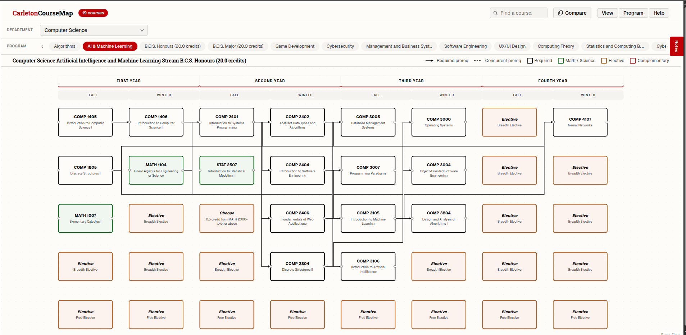
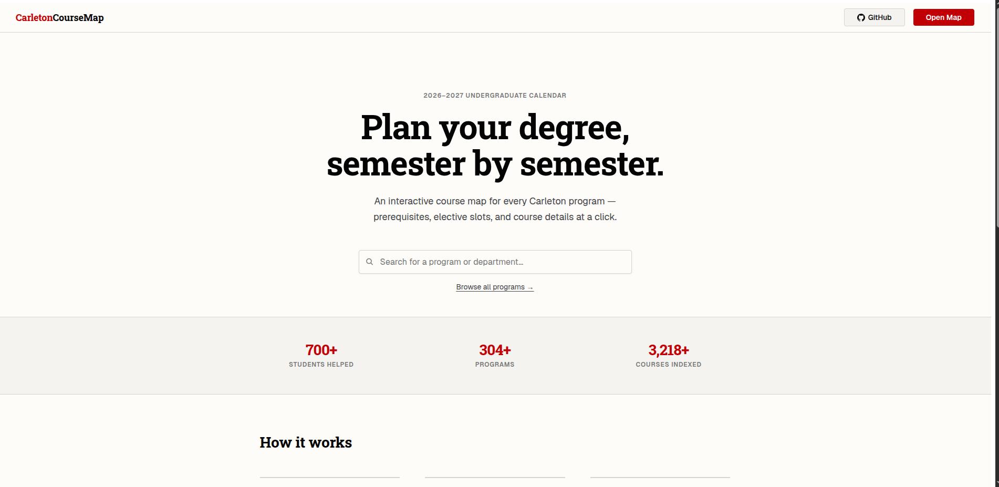
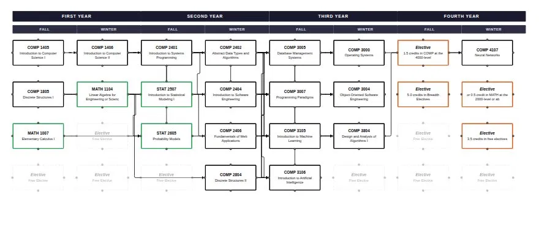
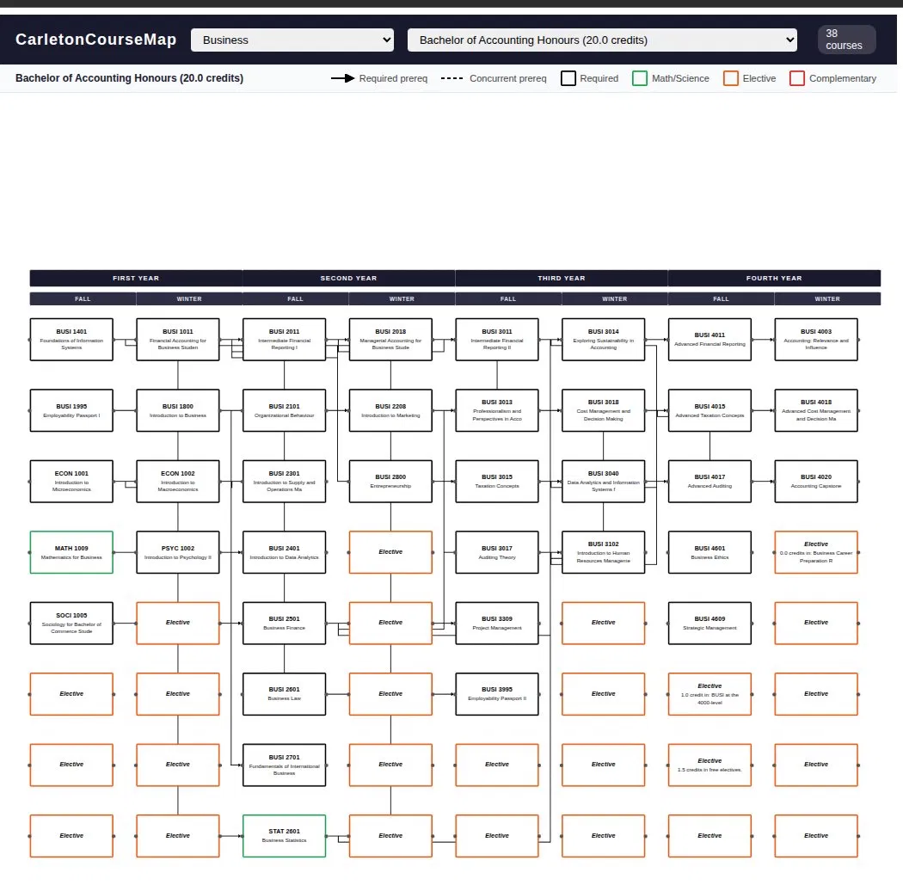

[ web · scraping · fullstack ]
My friend in Engineering showed me the course tree his department hands out to first-years. It was a PDF, just a grid — every required course, what unlocks what, four years on one page. His entire degree, legible at a glance.
My program didn't have one. Students without it were just expected to piece things together. Academic calendar in one tab, prerequisite lists in another, all written in paragraph form like nobody expected you to read them during registration. I'd done it. It takes longer than it should, you still miss things, and there's no good reason it works that way.
So I built a version for every Carleton program.

Pick any Carleton program and you get a four-year prerequisite map. Courses sit in a grid by year and semester — Fall left, Winter right. Arrows show prerequisites. Dashed arrows mean concurrent. Color tells you the course type at a glance: black border for required, green for Math and Science, orange for electives, red for complementary studies. The scheme matches what Carleton's Engineering department already uses in their PDFs — students already know it, which meant one less thing to explain.
Click a course and you get the description, credit weight, which semesters it runs, and professor info with RateMyProfessors ratings that update monthly. Elective slots show up as placeholders so the grid doesn't look broken when a semester has flexibility in it. It works on mobile — a lot of students check it during registration, on their phones, trying to figure out whether they actually qualify for something.



All the data comes from Carleton Central. Getting it clean took way longer than expected and involved throwing away the first version of the scraper entirely.
I started with Beautiful Soup. Fine for simple scraping — well documented, gets you somewhere fast. But as the scraper grew and I was hitting more page structures, the selector syntax got clunky and performance started dragging. When you're parsing prerequisites formatted differently depending on which department wrote them and which year the course was added, "gets you somewhere fast" stops being enough.
I switched to Parsel, which is what Scrapy uses under the hood. The XPath support was the main thing — it let me navigate messy HTML precisely, without piling on workarounds every time a page didn't match the expected structure. Rewriting finished code is annoying. It was still the right call.
The prerequisite parsing nearly broke me. Prerequisites at Carleton come in every shape: AND chains, OR choices, nested combinations, minimum grade requirements, year standing thresholds — all written as plain English prose with no consistent format across departments. "Prerequisite: COMP 1405 or COMP 1406" from one. "Prerequisite(s): One of COMP 1405, COMP 1406 with a grade of C- or higher" from another. Some list year standing instead of specific courses. Some do both. Some use formats I only ever saw on one single course in the entire catalog.
Every time I thought I'd covered every case, I'd add a new program and find something that broke the parser in a way I hadn't seen before. I genuinely lost count of how many times I rewrote pieces of it. For semester offerings where explicit data didn't exist, I use a heuristic — odd course numbers tend to be Fall, even tend to be Winter. It holds up well enough that the map doesn't look half-empty. Where real offering data exists it takes priority.
Prerequisite logic doesn't fit neatly into rows and columns. A course can have multiple prerequisites, those prerequisites can be ANDed or ORed, and the combinations nest. A relational schema would've meant either a gnarly join structure or cutting corners on what the data could express. I used JSONB in PostgreSQL instead — stores the AND/OR tree directly in the database without needing a whole separate prerequisites table for it.
The database is on Neon. Backend is FastAPI. Both nearly killed me before they worked. At one point I was copying the database connection string into .env and accidentally pasted it twice, merging two URLs into one broken string. The error this produced didn't say anything useful — it just looked like the app was crashing. I spent a while staring at code that was completely fine before I finally checked the environment variable itself. Then there was the time I pasted my actual Neon password into a chat window while asking for help with something. Had to stop and rotate credentials immediately. Not a great afternoon.
The frontend is Next.js. The map uses React Flow for the canvas — node rendering, edges, zoom, pan. For placing courses on the grid I used dagre, which calculates positions from the prerequisite graph automatically. Without it I'd have been hardcoding coordinates for hundreds of courses.
Tailwind broke things early. I installed v4 because it was current. It has deep incompatibilities with Turbopack — classes weren't applying, builds were failing, the errors weren't pointing at Tailwind. I spent too long assuming I'd misconfigured Next.js. Downgraded to v3, fixed immediately. Still pinned there.
Then the RAM crashes. Somewhere during development I ended up with two next.config.js files in slightly different locations. Next.js loaded both. Turbopack spun up duplicate processes. The dev server kept dying mid-session. Once I found and deleted the duplicate I also capped the Node.js heap at 2GB, which kept a memory spike from crashing it again.
The arrow overlap problem is the one I haven't fully solved. When multiple courses share a prerequisite, the edges stack on top of each other and look like a single thick line instead of separate connections. I tried switching edge types — smoothstep, step. I built a custom component that drew right-angle paths and tried to fan edges out to different handle points along node height. Some things helped in some cases and made other cases worse. The issue is that React Flow's routing assumes edges connect to fixed handles, and spreading multiple edges gracefully from the same source means working against that. Every fix made the code messier. Eventually I accepted it was good enough to ship and moved on. Still bugs me though.
Three platforms. Two failures.
Vercel was first — obvious choice for Next.js. The monorepo needed explicit config so Vercel knew which directory to build from. I got it wrong. Fixed that, then hit Cloudflare proxy conflicts where errors were coming back that looked like application problems but weren't. At that point I'd spent enough time on it.
Render was next, for the backend. Earlier in the project I'd briefly tried Fly.io and generated a Dockerfile I never ended up using. It was still sitting in the repo. Render found it and tried to use it instead of detecting a Python app, which produced a broken deployment with unhelpful errors. I spent a long time looking at application code before I found the file. Deleting it fixed things immediately. By then I'd already started looking at Railway so I just went with that.
Railway handled everything cleanly. Simple config, stable since day one. I should've started there and saved myself a week.
The gap between scraped data and clean data is bigger than it looks. A lot of the total project time went into edge cases — weird prerequisite formats, missing semester data, course codes appearing in multiple formats depending on where you look. Getting the happy path working is fast. The long tail is not.
Switching scrapers mid-project was annoying and worth it. Keeping the repo clean matters — a forgotten Dockerfile and a duplicate config each cost hours of debugging for no good reason. And at some point you have to ship something that isn't perfect. The arrow problem isn't solved the way I want it to be. The site still works.
Over 700 students have used it. Feedback has come in from Engineering, CS, Business, and others. Some people have flagged issues with specific course data, which helps more than general feedback. Things still on the list: better mobile layout for the map itself, more nuanced handling for programs with complex elective structures, professor data visible directly on nodes. And the arrows. One day.